Where the session stands
Running
- Merge run 48 green at 01:40 UTC (08:40 Bangkok): NET1 shared test core (FakeCore, plugin state) merged, review 0 BLOCK/MAJOR
- Merge run 49 green at 04:07 UTC (11:07 Bangkok): acts harness r2 merged (cleanup on failed setup, missing keys are breaches)
- Merge run 50 green at 06:16 UTC (13:16 Bangkok): look state adapters merged; the acts safety net (six invariants, known-red list) is complete
- Merge run 51 green at 08:04 UTC (15:04 Bangkok): shared key actions in kit, mc as pilot (same table for the old configs, review 0 BLOCK/MAJOR)
- Shared window book (tiling pilot): review MERGE-OK, kit::wm line coverage 98.3 % measured by the manager; merge run 52 since 08:08 UTC (15:08 Bangkok)
- Next lane: kit question card as the only one in mc and construct (sonnet; opus security review after)
Next
- Budget: about 68 % of the week (62 % your reading 23:59 UTC plus estimate); 32 % left for 68 h, about 8 % over even pace; no new opus lanes today
- Order (your call, 14:24): cleanup, then an intensive simulated user test, then a new human-paced tour with automatic checks against the look guidelines
- Then: cleanup slices with tests (sonnet builds, haiku tests), the glitch checks first
- Week goal until Sat 03:59 UTC (10:59 Bangkok): clean, well tested, well designed code (design/foundation.md F1-F8); a goal counts as met only with a measurement and an independent check
Needs you
- Now: this session may not push tags. Run:
git fetch origin main && git tag -a v0.9.0-rc.4 -m v0.9.0-rc.4 d060dc03 && git push origin v0.9.0-rc.4(the push starts the release workflow) - By Thu: in the cloud environment menu, Edit and save the setup script again. Lanes still use an old setup from 15 Nov with an old launcher (fuzzel 1.9); until then the full test runs happen in the manager's container.
Session 14 Nov
The session manager stopped answering at 10:15 UTC: a helper switched its notes folder to a code branch, and its hooks then blocked every message. A new session took over at 16:30 UTC. The hooks now never block, the notes folder is guarded, and a heartbeat alerts the owner if the manager goes silent.
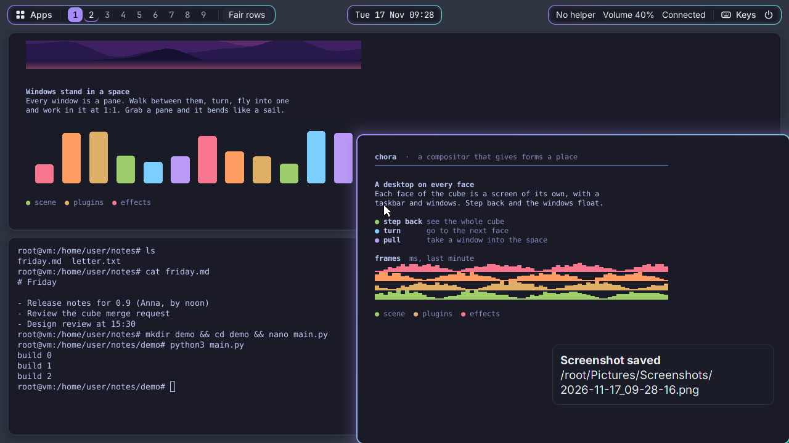
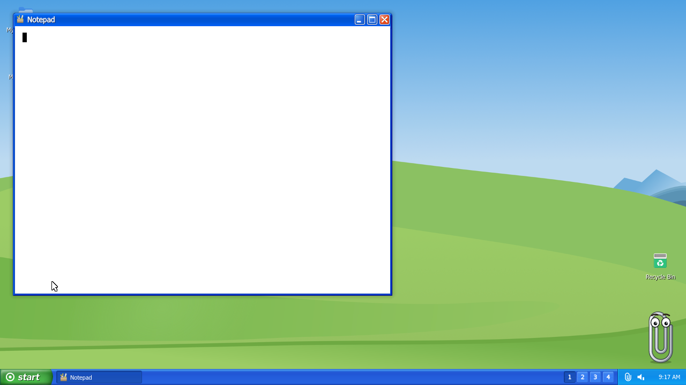
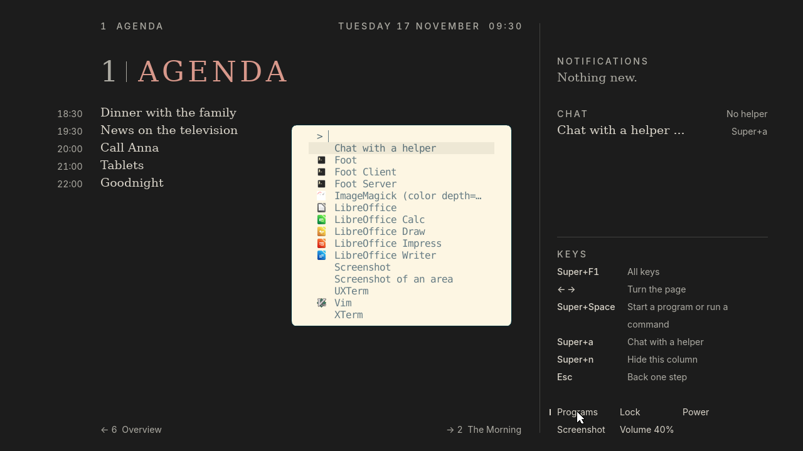
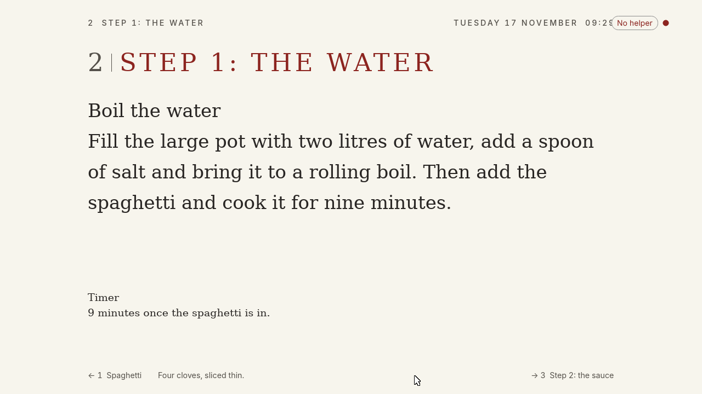


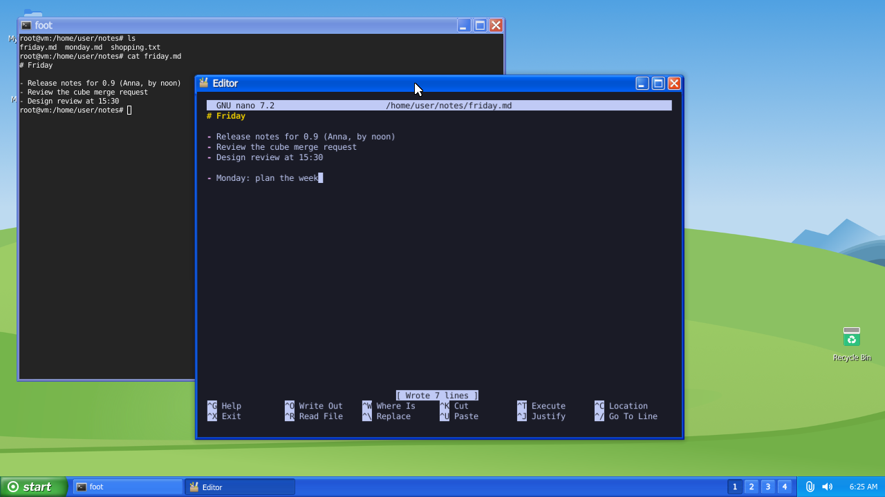
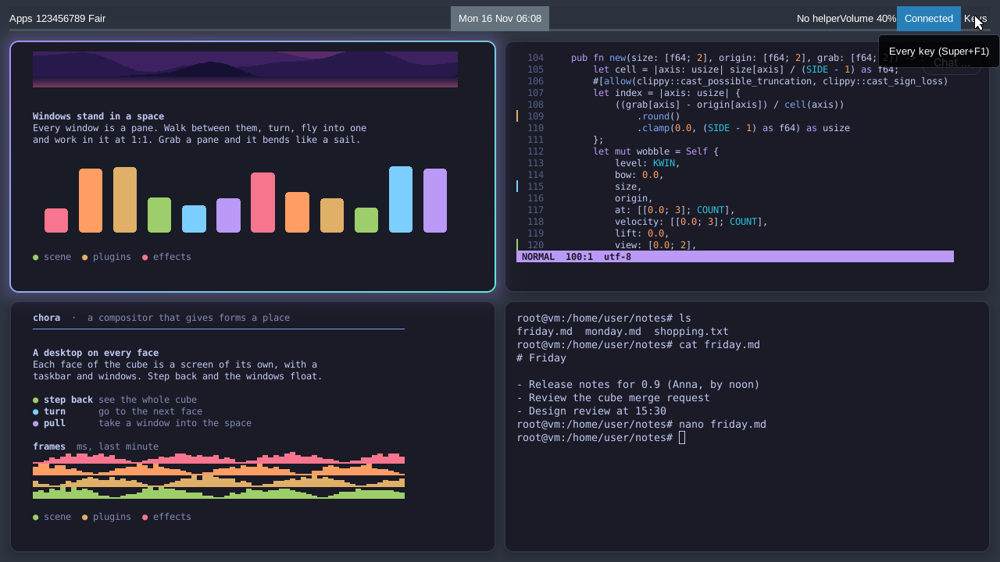
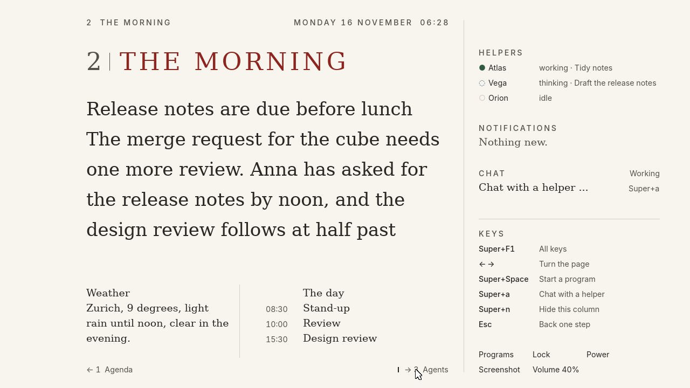
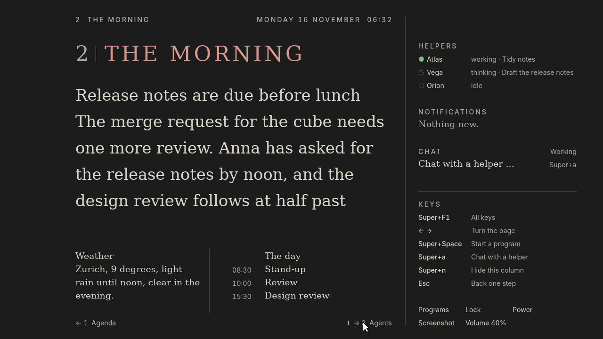
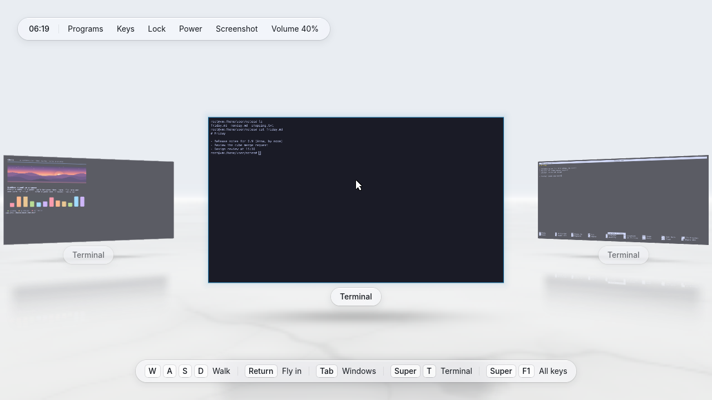

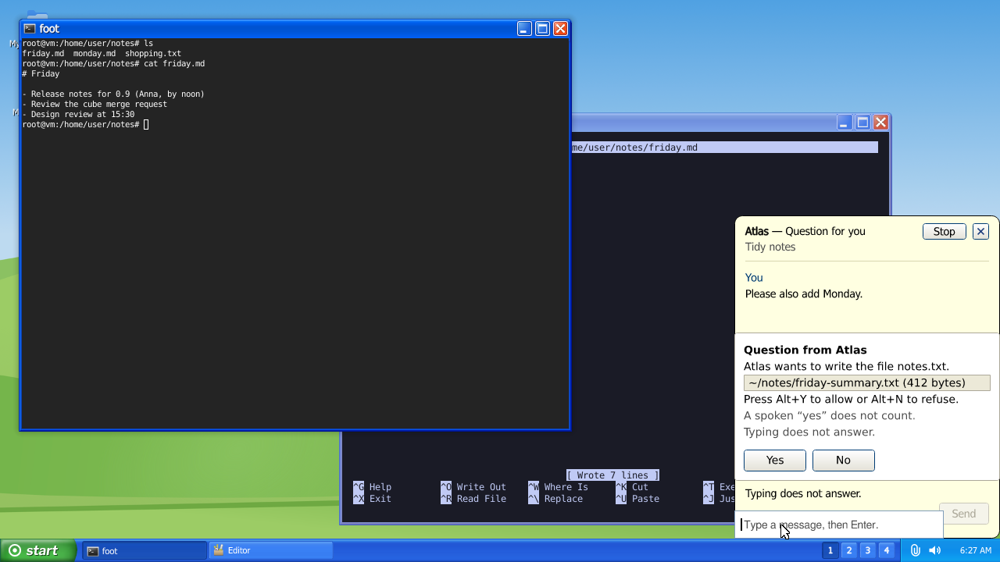
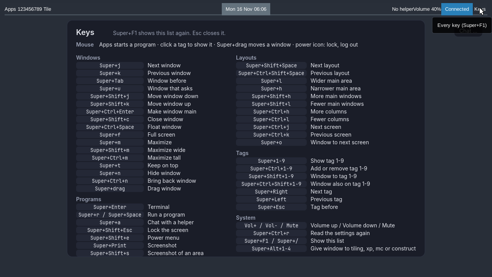
All captures: software rendering in a cloud container. A screencast of the new looks follows when construct v2 merges. Pictures name the look version; v2 pictures passed an independent review.
Tue 17 Nov11 entries
mergeMerge run 44 green: the first cleanup slice, mc's 3,456-line main.rs split into 8 modules by pure moves (reviewed). Tiling and xp splits reviewed clean and queued; the size check needed one fix round.
mergeMerge run 43 green: the media test harness (pull gate checks both drags). rc.4 stays untagged (your call, 14:20). Plan changed: cleanup, simulated user test, then a new tour with automatic checks.
releasev0.9.0-rc.4 on dev and main (CI and packaging green). The tag waits for the owner (this session may not push tags). Tour v8 (4:04) added to Pictures.
mergeMerge run 39 green: the xp fix (Notepad opens only a real editor, or says none is installed) and the tiling fix (Super+Print shows a notice; Screenshot in the power menu of the bar) are in. Tour v7 started to show them.
mergeSecurity fix round 2 merged (train 38, all checks green): the helper now refuses a question the screen cannot show in full, and refuses settings that would hide text, while emoji and Persian text pass. The xp and tiling fixes passed review and are in merge run 39.
reviewTour v6 recorded (3:28) and reviewed: 5 of the 7 big issues from v5 are fixed (power menu in the tiling bar, bar spacing, window shows in mc after a drop, Helper in the 3D HUD, pane visible after step back). Two remain: Super+Print shows nothing in tiling, and Notepad in xp is a terminal editor. Two sonnet fix rounds started.
mergedTrain 37: the decision log gets the nine missing records, your proposals D1-D8 and the packaging plan, all marked as proposed and revisable. Sixth green run in a row.
mergedTrain 36: xp says Notepad opened only once its window shows, and no second editor starts. All checks passed; fifth green run in a row.
reviewSecurity fix round 1 reviewed: the cleaning and the click guard work, but three big gaps remain, so round 2 has started. The CI coverage failure is a known flaky test (F22), not this change.
reviewArchitecture plan for sprint 1 (shared code into kit modules) and a security review: question text in mc and construct can hide characters; fix started.
mergedTrain 35: construct keeps a pulled window visible when you step back and shows the Helper word; tiling adds a power-menu check to the merge test. All checks passed. The xp fix (round 6) passed its review and runs in train 36.
CICI is green on train 34 (39fe12d2).
mergedTrain 34: a window handed to mc now shows above the mc page during the drag. Third green merge run in a row. The construct and tiling fixes passed their reviews and run in train 35; the tiling tour issues were faults in the recording script and get checked again in tour v6.
reviewTour v5 (3:48) on the fixed build: both blockers are gone (the cube keeps every window, the mc remote turns pages). An independent review found 7 big issues left: tiling bar text runs together, no screenshot notice and no power menu by mouse; xp Notepad opens a terminal editor; construct hides a pulled window when stepped back and has no helper button; a window handed to mc is not drawn for 6 s. Four fix lanes started.
Mon 16 Nov12 entries
CICI is green on train 33 (4105f8d1): all 10 jobs, the Arch and RPM package builds and the end-to-end tests included.
mergedTrain 33: two CI failures fixed. The Arch package missed the tiling bar file, and a test removed its temporary folder while a closing program could still write into it. New checks now compare every shipped plugin file with both packages. The first review asked for one more round (the same cleanup bug in another test); all checks passed.
mergedTrain 30b: tiling bar style (round 2) and the fix for the flaky mc door click: the chat field now hides on every close, so it no longer covers the screenshot and volume buttons. Train 30 without the fix hit that click again; with it, all checks passed.
mergedTrain 32: the cube no longer loses a window, F1 shows the key list, Escape closes the cube; xp question-card hint and draw order. The first run hit the known flaky mc door click; the rerun passed.
mergedTrain 28: the mc remote turns the page again (one of the two blockers), the empty column head and help cards are fixed; all checks passed.
mergedTrain 25: helper programs no longer see your API keys, and a confirm list must cover starting programs (two security fixes, all checks passed). Reviewed and passed: the xp paperclip and text fields, keys in side-by-side looks, the cube no longer sliding away.
planCube round started: the drag that loses a window, F1 key list, Escape closes the cube, and no stray key into a window.
reviewTour v4 (3:18) reviewed by the PM and one independent reviewer: not fit to show yet. 2 BLOCK (cube drag loses a window; mc remote does not turn the page) and 14 new MAJOR. Fix lanes per look started; the Friday tag is at risk, decision Wed 12:00 UTC (19:00 Bangkok), else Tue 11-24.
CICI is green on the merged train 24 (caf9c80d): the e2e step that failed before now passes.
mergedTrain 24: the red CI pixel is fixed. The glow and shadow were drawn twice over the old frame; now only the changed parts are drawn (30 of 30 runs green before the merge).
planNew working rules from your review: a cost and tag check for every request, at most 6 lanes that change code, no new features before the release candidate, a daily burn-down line.
fixedSlow cloud workers: the setup script built four tools from source and failed on any missing one. It now downloads them; workers start within a minute.
reviewCode review of all eight areas: no serious finding; four medium security findings go to two fix lanes.
mergedTrain 22: the tiling bar no longer dies when it is signalled before it is ready (it sometimes did not show), and the launcher click and this bar case now run in every merge and in CI. The first merge check failed on a known flaky mc door click; the rerun passed.
mergedTrain 21: security fixes a. Every input event now carries a "faked by a program" mark in its type, so no look can forget to check it; faked clicks, moves, hovers and scrolls change nothing a person would see. Tests prove a real click on the chat row still opens the chat.
CIThe CI pull request is green on train 20: all 10 jobs, end-to-end included. The corner-pixel failure came and went before, so two more green runs are needed before it counts as fixed.
mergedTrain 20: the frame watchdog counts only the slowest thread's wait, so a busy machine without a GPU no longer drops window effects. CI on this build shows whether it also fixes the corner-pixel failure.
Sun 15 Nov29 entries
reflectionWorkday close with an independent critic: today spent more than its budget share, mostly in the PM's own turns; one new check now refuses an unmeasured budget line. Plan: no opus until Monday, fewer log updates.
reviewThe frame watchdog fix needs one more round: under load it could excuse a truly slow scene, so the safety switch would never fire. Fix round 2 started.
mergedTrain 19: look fixes round 5. The chat Stop button stays put, and long pastes no longer slow the chat. The only open look blocker is clicking in the tiling launcher (fuzzel 1.11, Monday).
mergedTrain 18: security fixes b. Secrets stay out of the helper logs, and plugins no longer see hidden settings. Look fixes round 5 merge next.
reviewLook fixes round 5 passed review. The mc voice-confirm finding was a stale test script, not a bug: a person can always answer by key, by voice or by waiting.
CIThe CI pull request is green again on train 17. The corner-pixel failure comes and goes (2 of the last 4 runs); the frame watchdog lane is chasing it.
mergedTrain 17: flaky-test round 5 (a theme picture cache race, the lock takeover check, the tiling bar start). Security fixes b merge next.
reviewSecurity fixes a: the review found two major gaps (injected keys still drive the 3D window list; an open plugin call can rewrite the agent column). A fix round started on a cheaper model.
reviewSecurity fixes b passed their review: secrets stay out of the helper logs, plugins see no hidden settings. Four minor points go to the backlog.
CICI end-to-end failed twice on the same corner pixel, so it is not a flaky test. Not reproduced locally; lead: the frame watchdog drops window effects on a busy machine without a GPU.
planPlan re-paced after your budget reading (33 %): about 10 % a day until Saturday's reset; tests on haiku, fixes on sonnet, opus for reviews and hard causes. fuzzel 1.11 gets built in the cloud setup; the media lane refreshes status pictures, the screencast and README screenshots.
mergedTrain 16: sharper tooling round 5 (the plugin call check no longer misses calls after a commented lint exception). The flaky-test round merges next.
mergedTrain 15: the chat header never grows past two lines in any look, and tiling no longer cuts words. Tooling round 5 and the flaky-test round passed their reviews and merge next.
CIThe CI pull request is green again after train 14: all 10 jobs.
startedTwo security lanes: every medium security finding of the plugin review gets a failing test and a fix (release criterion 6).
mergedTrain 14: logging audit round 2 (log files locked, secrets scrubbed). One known flaky tiling test needed a rerun.
reviewChat fix passed its independent review: the chat header never grows past two lines in any look, and a long task ends in "…". Left for the next round: the Stop button moves 20 px when a run starts.
reviewTooling round 4 fixed all five earlier points, but its review found a new gap: a comment after a lint exception hid plugin calls from the check. Round 5 started.
reviewOpen findings re-checked on the new build: 7 major or blocking before, 2 now. Open: clicking in the tiling launcher (needs fuzzel 1.11) and the "no helper" words cut off in tiling and construct.
CIThe CI pull request is green for the first time: all 10 jobs, end-to-end tests, the virtual-GPU job and both package builds (RPM, Arch).
mergedTrain 13: the last major look fixes (typed text never reaches a helper you did not pick) and CI end-to-end tests where a skip fails in CI.
mergedTrain 12: flaky-test round 4 (a slow first backtrace no longer ends the core; key grabs never drop during a change in xp, tiling and mc) and the virtual-GPU CI job on new kernels.
budgetFable used up and reset; all lanes on Opus, Sonnet and Haiku now. Every model at 20 % this week.
mergedTrain 11: a stuck focus glow in tiling at 2x scale fixed (the layout audit found it), the CI check job, and the virtual-GPU job unbinds every other GPU.
reviewThree independent reviews: flaky-test round 4 ready; last look fixes and CI end-to-end tests need one more round each.
planSharper tooling now: harness issues join every reflection; every bug asks which compile-time gate would have caught it.
mergedTrain 10: the virtual-GPU CI job runs on any runner, not only on Hyper-V.
mergedTrain 9: the packages require fuzzel 1.11 (mouse in the launcher) and fontconfig, and recommend the DejaVu fonts; CI installs the fonts its text tests measure. Open findings re-checked: 32 major or blocking before, 7 now.
mergedTrain 8: the shared doors in every look (key list, launcher with a helper row, helper, lock, power, screenshot, volume, clock) after four review rounds, and two fixed e2e checks.
Sat 14 Nov9 entries
mergedTrain 7: flaky-test round 3 (input times, a lost key in the tests, xp window cascade, a key gap in the construct) and the fonts the CI tests need.
mergedTrain 6: three crash fixes (xp Start menu, mc settings, long notifications) and CI: package builds on pull requests, locked dependencies. Draft pull request #106 to dev opened so GitHub CI runs on the candidate.
mergedTrain 5: CI checks, docs, the xp/tiling/construct fixes, core security review with its fixes, the mc keyboard around the chat, and the fix for the test that blocked every merge. All 24 gate steps green.
fixNew workers hung at start: the setup script failed on a missing helper repo; now only a warning. Heartbeat verified.
planFable is used up this week with at most two lanes at once, then none until next week.
fixHooks that never block, a guard on the notes folder, a takeover script and a heartbeat with a push to the owner.
testsmc fixes done: arrows turn pages, Mute and Urgent words, a click removes one notification. 22 of 23 gate steps; the cube step fails on a known flaky cell.
outageSession manager silent since 10:15 UTC; a new session took over. One lane's unpushed work was lost and is redone.
mergedTrain 4: mc, construct, tiling and xp picture rounds, review fixes, test harness. Full gate green.
Thu 12 Nov7 entries
mergedxp look v2: its own start mark (no Windows flag), a Help window that shows every row, a Run box in xp colours, no false launch notes; plus guard tools and the packaging check. Two picture reviews, all 19 gate steps green.
mergedmc look v2: the helper, chat, notifications and questions now live in the right margin like notes on a printed page; a visible key list; the chat and question card follow each look's colours and fonts in every look. Three review rounds, all 17 gate steps green.
mergedTiling look v2: floating bar islands, a glowing focus border, rounded corners and shadows, a key list, light and dark themes, power menu and screenshots. Three review rounds, all 17 gate steps green.
designDesign passes for all four looks done; four builders started. Simulated user tests stopped: the last round found nothing new.
testsSimulated user round 3 started with tighter limits (smaller screenshots, 30 steps).
testsSimulated user round 2 sorted: 20 real findings, 9 caused by the test container. Worst: no visible way into the helper chat, and a key list only in construct.
fixThe session lost its rules after a memory compaction; a rule card is now reloaded automatically after each one.
Wed 11 Nov9 entries
mergedThe construct HUD rework: one help sheet (F1), clearer looks.
planReflection loop done (opus): lanes cut by area, a merge train, failing tests first checked at merge, one review round per lane. Release candidate estimated for Wed 18 Nov.
ux loopDesigner loop over every feature, KISS and least surprise first: 3 blockers and a list of things to remove. Chat fixes merged; construct fixes being traced.
mergedAll fixes of user test round 3: voice opens the chat, the chat field takes the keyboard, volume, honest messages, pull out of the stood-back cube.
demoCube and pull-out clips, poster shot.
milestoneWindow moves: 85 of 85. Floating windows, click rule, nested-desktop test.
mergedPull a window out of the cube; step back, turn, step in.
milestoneThe xp cube merged.
mergedGive a window during a drag, after a security review.
paused5-hour limit stop overnight; resumed.
Tue 10 Nov3D base, construct, crash work
milestoneThe xp cube runs in the 3D construct.
merged3D construct and 3D wobble.
mergedLast words on every crash, watchdog fix, mc fast with 300 panels.
auditIndependent judge: code produced faster than verified; course corrected.
milestone3D base complete, three days early.
mergedThe merge gate: every step logged, stops at any failure.
Mon 9 NovHUD sprint, principles
decisionOne cube: the construct cube replaces xp's own.
sprintHUD and helper chat sprint started.
docsDesign principles: minimal, flawless, flexible.
mergedRisky actions need a key or a click, never a spoken yes.
This week (dates UTC)
- Sat 14: merge CI, docs, doors, mc, xp/tiling/construct and core fixes; restart the flaky-test work
- Sun 15: major look findings and the 3 high review findings fixed; blockers checked; CI pull request with package builds
- Mon 16: burn-down check; one picture pass per look; your approval of each look
- Tue 17 to Wed 18: user test round 4 and its fixes; logging audit; final review rounds until two in a row are clean
- Thu 19: three green merge gates in a row on the candidate
- Fri 20: tag the release candidate (target; a slip of 2 to 3 days is possible)
- Sat 21 to Sun 22: extensive user test round, reflection with fresh Fable
- Mon 23: idea round, then feature sprints: everyday system tasks, voice tools and grants, the report tool; one or two experiment lanes
Budget
- Fable: used up and reset; Opus for reviews and hard work from 15 Nov 03:35
- Builds on Sonnet, tests on Haiku, the manager on Opus